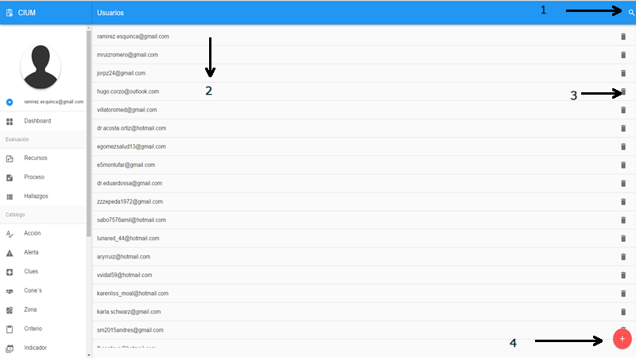
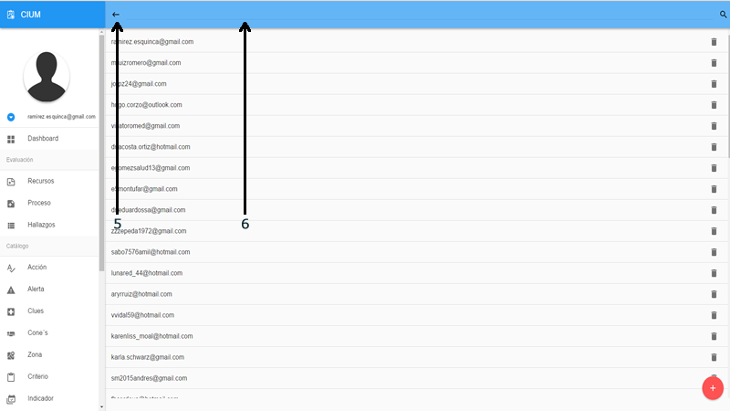
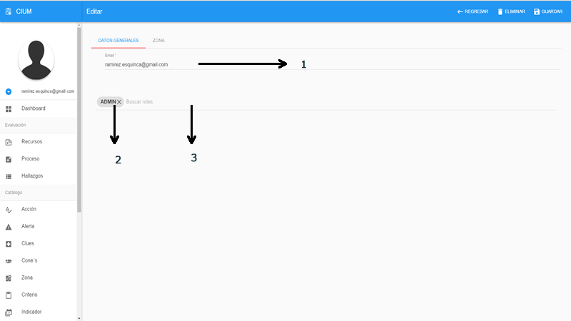

Capítulo 3
Sistema
En este apartado esta todo lo relacionado con el usuario, roles y permisos. se pueden configurara permisos por acción lo que hace mas seguro y mas robusto el modelo de permisos.
Todos los modulos tiene un listado con las opciones como se describen.

Listado
- 1.- Buscar
- 2.- Datos
- 3.- Eliminar
- 4.- Agregar un registro nuevo

Listado buscar
- 5.- Regresar y restablecer las opciones
- 6.- Campo de busqueda: escribir y dar enter para iniciar la busqueda
3.1 Roles
Roles creacion y administracion de los roles y configuracion de las acceso a modulos por accion.

Crear / Editar
- 1.- Nombre del grupo
- 2.- Módulos disponibles
- 3.- Acciones en el módulo
- 4.- Regresar al listado
- 5.- Guardar
- 6.- Eliminar
3.2 Usuario
Usuario administra los usuarios que provienen de SALUD-ID (OAUTH2.0) para que puedan tener acceso al sistema.

Crear / Editar
- 1.- Correo del usuario, este es el correo con el que se dio de alta en SALUD-ID
- 2.- Rol o grupo de usuario. Puede ser uno o más, se puede eliminar desde la x
- 3.- Buscar agrergar rol

- 4.- Apartado zona. Nivel de permiso: Estatal(todas las unidades médicas del estado), Jurisdiccional (todas las unidades médicas de la jurisdiccion), Zonal (todas las unidades médicas de la zona)
- 5.- Detalle del nivel de permiso ya sea por jurisdiccion o por clues
- 6.- Eliminar la fila
- 7.- Regresar al listado
- 8.- Eliminar
- 9.- Guardar